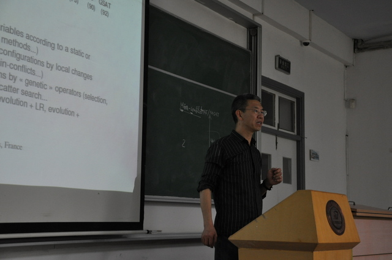
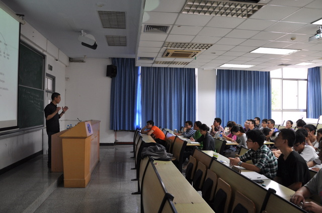

实验室于10月12日邀请法国University of Angers Jin-Kao Hao特级教授前来实验室访问。郝教授为理论所的全体师生开设了讲座，主要探讨启发式优化及其应用方面的研究课题，结合频率分配、卫星拍照片调度等当前的研究热点问题，讨论了如何用启发式的方法来研究这些复杂的实际问题。


Jin-Kao Hao教授简介：
Jin-Kao Hao was born in Nov. 1961 in China. He graduated in 1982 from the National University of Defense Technology (SchoolofComputer Science) (China). He received a Master degree (Oct. 1987) from the National Institute of Applied Sciences (INSA Lyon, France), the Ph.D. in Constraint Programming (Feb. 1991, from the University of Franch-Comté, Dijon, France) and the Professorship Diploma HDR (Habilitation a Diriger des Recherches) (Jan. 1998) from the University of Montpellier II (France).
His work has been featured in top International Conferences (AE, CP, CPAIOR, ECAI, EvoBIO, EvoCOP, EMO, GECCO, IEEE CEC, ICTAI, IJCAI, MIC, PPSN) and Journals (Annals of Operations Research, Applied Soft Computing, European J. of Operational Research, Computers & Industrial Engineering, Computers & Operations Research, Discrete Applied Mathematics, 4OR, Engineering Applications of Artificial Intelligence, Evolutionary Computation, IEEE Transactions on Evolutionary Computation, IEEE/ACM Trans. on Computational Biology and Bioinformatics, BioData Mining, Bioinformatics, Briefings in Bioinformatics, BMC Bioinformatics, Genomics Proteomics & Bioinformatics, J. of Combinatorial Optimization, Computational Optimization and Applications, J. of Heuristics, Intl. J. of Metaheuristics, Intl. J. of Applied Metaheuristic Computing, Intl. J. of Mathematics in Operational Research, J. of Mathematical Modelling and Algorithms, Intl J. of Mobile Network Design & Innovation, Knowledge-based Systems, Knowledge and Information Systems, Natural Computing and Applications, Neurocomputing, RAIRO Operations Research, Transportation Research). His work has received multiple citations. His current H-index is 25.
地址：中国·湖北省·武汉市·珞喻路1037号·华中科技大学南一楼四楼 邮编：430074 联系电话：027-87543885 登陆入口
本网站由yechao开发维护，如有问题，邮件至 Email: ye_hust@sina.com